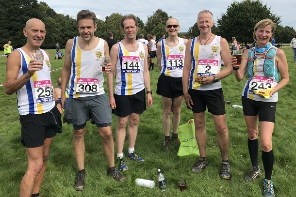

Sally Shewell was first W55 as nine Sevenoaks AC runners tackled the scenic and sapping Eridge 10 on Sunday 9th September. Andrew Hutchinson led the SAC team home with John Stevens, who was third M50, close behind.
The Sevenoaks AC results were as follows:
| Pos | Time | Name | Club | Gen | Cat | Num | PGen | PCat |
|---|---|---|---|---|---|---|---|---|
| 14 | 01:20:01 | Andrew Hutchinson | Sevenoaks AC | M | Senior Male | 144 | 11 | 8 |
| 19 | 01:20:53 | John Stevens | Sevenoaks AC | M | Male Vet 50 | 259 | 16 | 3 |
| 49 | 01:27:17 | Daniel Witt | Sevenoaks AC | M | Male Vet 40 | 308 | 44 | 21 |
| 90 | 01:34:29 | Simon Hallpike | Sevenoaks AC | M | Male Vet 60 | 113 | 76 | 4 |
| 128 | 01:37:51 | Pauline Dalton | Sevenoaks AC | F | Female Vet 45 | 61 | 26 | 12 |
| 131 | 01:37:59 | Mike Allen | Sevenoaks AC | M | Male Vet 50 | 2 | 104 | 25 |
| 163 | 01:43:31 | Sarah Shewell | Sevenoaks AC | F | Female Vet 55 | 243 | 38 | 1 |
| 248 | 01:58:03 | Neil Haggertay | Sevenoaks AC | M | Male Vet 50 | 339 | 178 | 53 |
| 250 | 01:58:36 | Clair Thornton | Sevenoaks AC | F | Female Vet 35 | 274 | 71 | 26 |
The full results are here.
